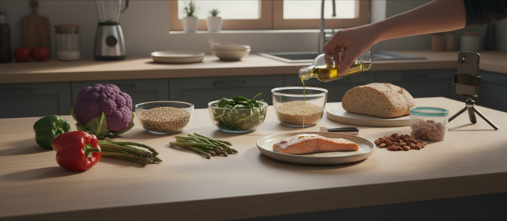
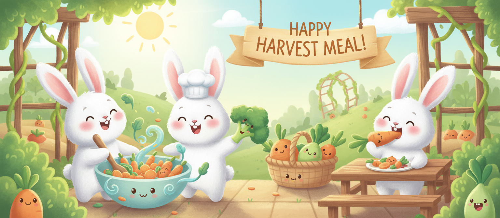
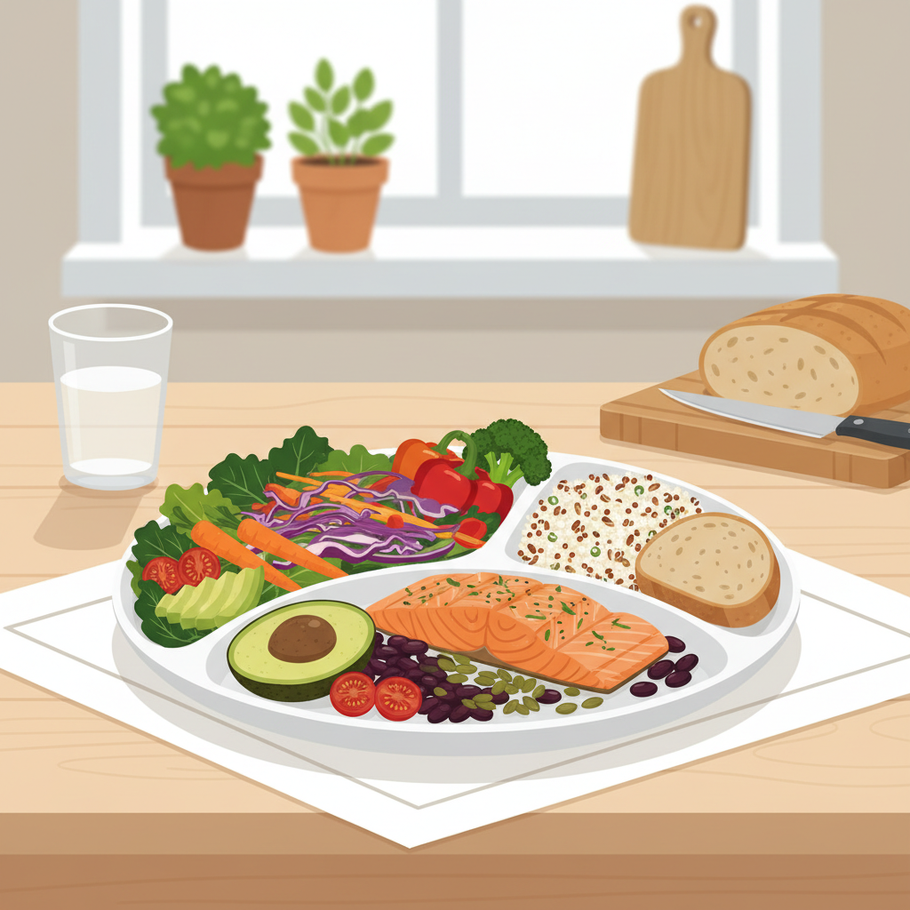
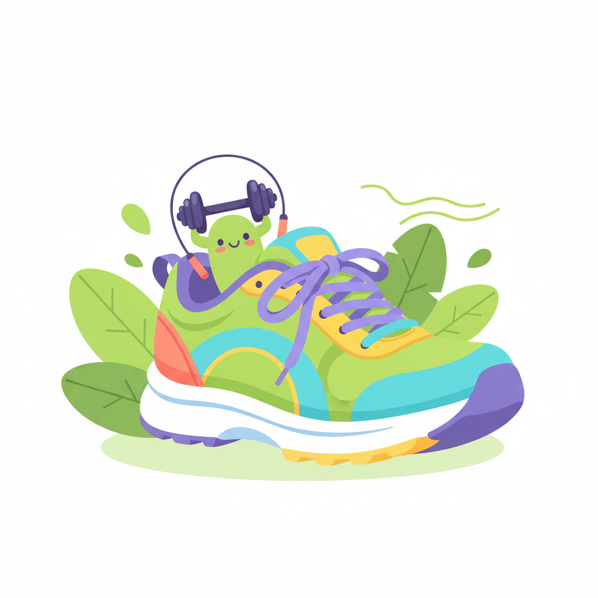
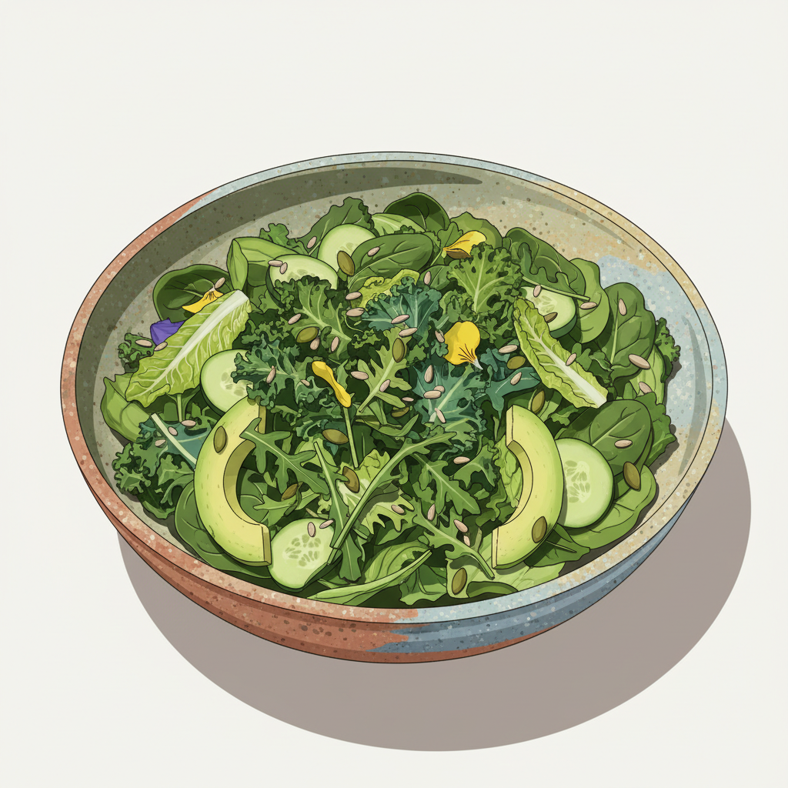

나와 지구를 위한 바른 먹거리 원칙
풀무원이 제안하는 바른먹거리 가치와 실천 방안을 소개합니다
풀무원은 '지구의 건강한 내일을 만드는 기업' 입니다.
"바른먹거리로 사람과 지구의 건강한 내일을 만드는 기업"
풀무원은 사람의 건강뿐만 아니라, 생산 과정에서 발생하는 지구 환경 오염까지 줄여 더 많은 사람들이 안전하고 바른 먹거리를 공급받을 수 있도록 최선을 다하고 있습니다. 환경 부담을 최소화하는 지속 가능한 순환 농법, 동물 복지 환경을 배려한 동물복지 제도, 환경 호르몬 우려가 없는 친환경 포장 기술 도입 등 지구 보존의 가치를 위한 노력을 이어가고 있습니다.
자엘(GL) 다이어트
탄수화물 섭취량을 줄이고 당 흡수를 늦춰 인슐린 과다 분비를 막는 건강한 식사법
지엘(GL)
지엘
다이어트
GL(Glycemic Load) 다이어트는 당뇨 및 비만을 극복하고 예방할 수 있는 건강하고 똑똑한 식생활 방법입니다. 단순히 칼로리 섭취량만 줄이는 것이 아니라, 혈당에 미치는 영향까지 고려해 탄수화물 과다 섭취를 조절하고 호르몬 분비의 안정성을 유지하여 체지방이 몸에 축적되는 것을 예방하도록 설계되었습니다.
탄수화물을 적절히 조절하며 단백질, 신선한 채소 중심의 균형 잡힌 저GL 식단으로 평생 지속할 수 있는 건강한 식습관을 길러보세요.
-
로하스식사 3
균형 잡힌 로하스 식사
하루 세 끼를 규칙적으로 섭취하되, 채소와 단백질을 중심으로 한 로하스 식단을 실천합니다. 자연에 가까운 식재료로 조리하고, 과도한 가공식품을 피하세요.
-
영양균형 211
채소 2 : 단백질 1 : 통곡물 1
211 식사법은 채소 2컵, 단백질 1컵, 통곡물 1컵의 비율로 구성된 영양균형 식단입니다. 혈당 안정과 포만감 유지에 탁월하며 체중 관리에도 효과적입니다.
-
바른식습관 5
5가지 바른 식습관 실천
천천히 꼭꼭 씹기, 아침 식사 챙기기, 야식 피하기, 과식 자제하기, 음식 남기지 않기의 5가지 바른 식습관을 일상에서 꾸준히 실천하세요.


211 식사법
채소 2, 단백질 1, 통곡물 1 비율의 균형 잡힌 친환경 건강 식단
211 식사법
-
2 채소 채소 2
신선한 제철 채소류
식이섬유, 비타민, 무기질 등이 풍부한 채소류를 충분히 섭취하여 포만감을 높이고 영양 균형을 맞춥니다. 하루 권장량의 채소를 빠짐없이 섭취하는 것이 중요합니다.
-
1 단백질 단백질 1
두부, 콩, 생선, 살코기 등
동물성 포화지방이 적은 식물성 단백질원인 두부나 콩류를 우선 섭취하며, 신체 근육 유지에 필수적인 양을 매끼 챙깁니다.
-
1 통곡물 통곡물 1
현미, 보리 등 정제되지 않은 곡물
흰쌀밥 대신 정제 과정이 적어 식이섬유가 살아있는 통곡물을 섭취하여 당 흡수를 한층 늦춰 줍니다. 혈당 조절에 큰 도움이 됩니다.

211 식사법 실천 방법
채소 2 신선한 제철 채소류
식이섬유, 비타민, 무기질 등이 풍부한 채소류를 충분히 섭취하여 포만감을 높이고 영양 균형을 맞춥니다.
단백질 1 두부, 콩, 생선, 살코기 등
동물성 포화지방이 적은 식물성 단백질원인 두부나 콩류를 우선 섭취하며, 신체 근육 유지에 필수적인 양을 매끼 챙깁니다.
통곡물 1 현미, 보리 등 정제되지 않은 곡물
흰쌀밥 대신 정제 과정이 적어 식이섬유가 살아있는 통곡물을 섭취하여 당 흡수를 한층 늦춰 줍니다.
풀무원이 권하는 건강생활 실천 지침
일상에서 손쉽게 실천하는 세 가지 핵심 영역별 규칙

규칙적인 신체 활동으로 건강한 몸 만들기
- 1
나의 건강 상태를 주기적으로 체크한다.
- 2
적당한 유산소 운동을 통해 심폐 지구력을 키운다.
- 3
정기적인 근력 운동과 스트레칭으로 신체 유연성을 기른다.
- 4
충분한 숙면을 취해 스트레스를 해소한다.
- 5
올바른 식단 계획을 세워 아침, 점심, 저녁을 규칙적으로 챙긴다.

바른먹거리 식단으로 건강한 삶 실현하기
- 1
채소 2, 단백질 1, 통곡물 1 비율의 211 식사법을 적용한다.
- 2
매끼 식사를 천천히 꼭꼭 씹어 먹는다.
- 3
동물성 단백질보다는 식물성 단백질 위주의 건강한 식단을 실천한다.
- 4
식사 시 자극적인 양념이나 과도한 염분 섭취를 멀리한다.
- 5
나와 가족, 지구의 내일을 위한 안심할 수 있는 지속가능한 식재료를 고른다.
충분한 수면으로 신체 회복과 면역력 증진하기
- 1
매일 밤 일정한 시간에 자고 일어나는 규칙적인 생활을 지킨다.
- 2
충분한 시간 동안 긴장을 풀고 깊은 잠을 잘 수 있는 수면 환경을 가꾼다.
- 3
잠들기 전 전자기기 사용을 지양하고 가벼운 명상이나 음악 감상으로 마음을 가라앉힌다.
- 4
규칙적인 운동을 유지하되, 잠들기 직전 과도한 트레이닝은 피한다.
- 5
신체의 순환을 위해 미지근한 물 한 잔으로 가벼운 수분을 충전하고 잠든다.